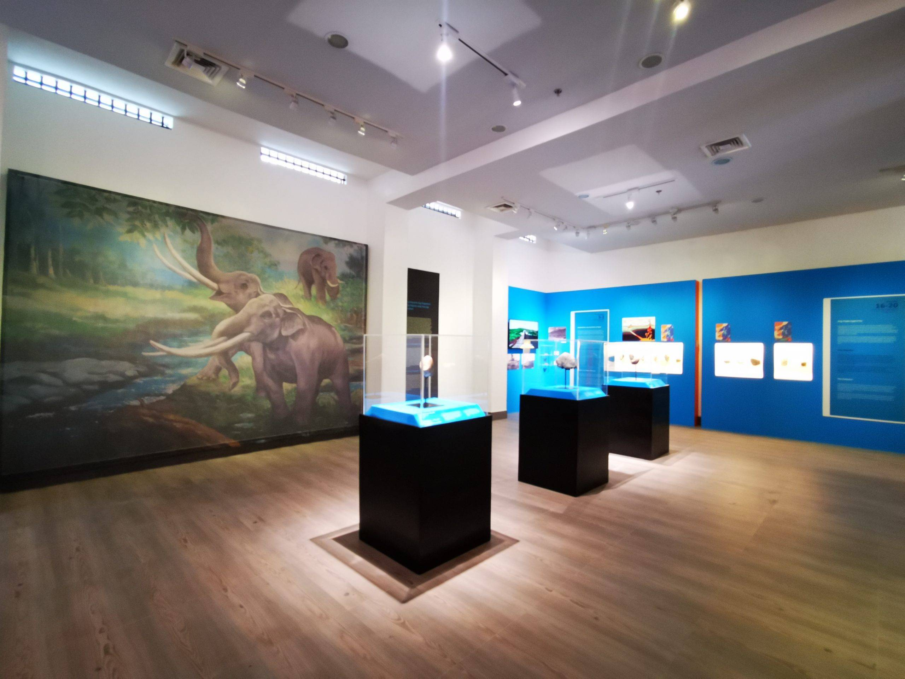

The National Museum Western Visayas lloilo Provincial Jail, was one of the first American structures built in the Philippines. The Iloilo Provincial Jail also known as the Iloilo Rehabilitation Center (IRC) and Prison of Iloilo, was built in 1911 and was used as a jail until 2006. The more or less 860 square meter building is located at the Iloilo Provincial Capitol Complex, Bonifacio Drive, City Proper, Iloilo City. The National Museum of the Philippines (NMP) declared IPC an Important Cultural Property (ICP) on December 16, 2016 for its exceptional architectural cultural and historical value. The jail was designed by Architect William Parsons, the then Consulting Architect of the Philippine Government working with the Bureau of Public Works and was in charge of the designs of all public buildings and parks in the Philippine Islands. The original design followed the form follows function mantra of Modern architecture.
This is the sidebar content.